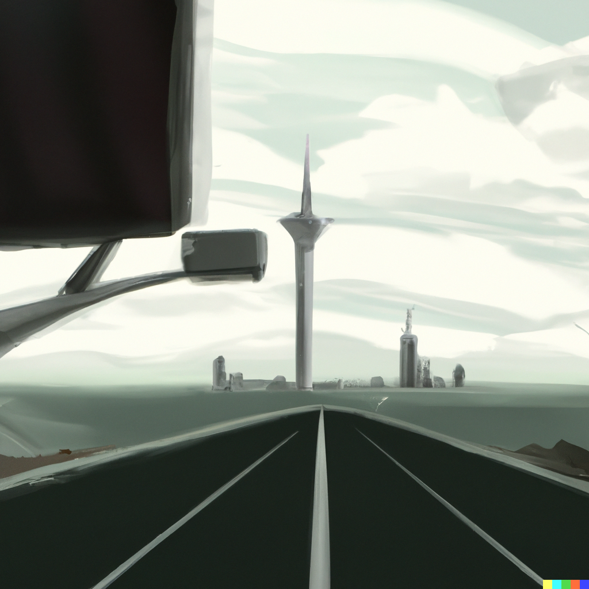
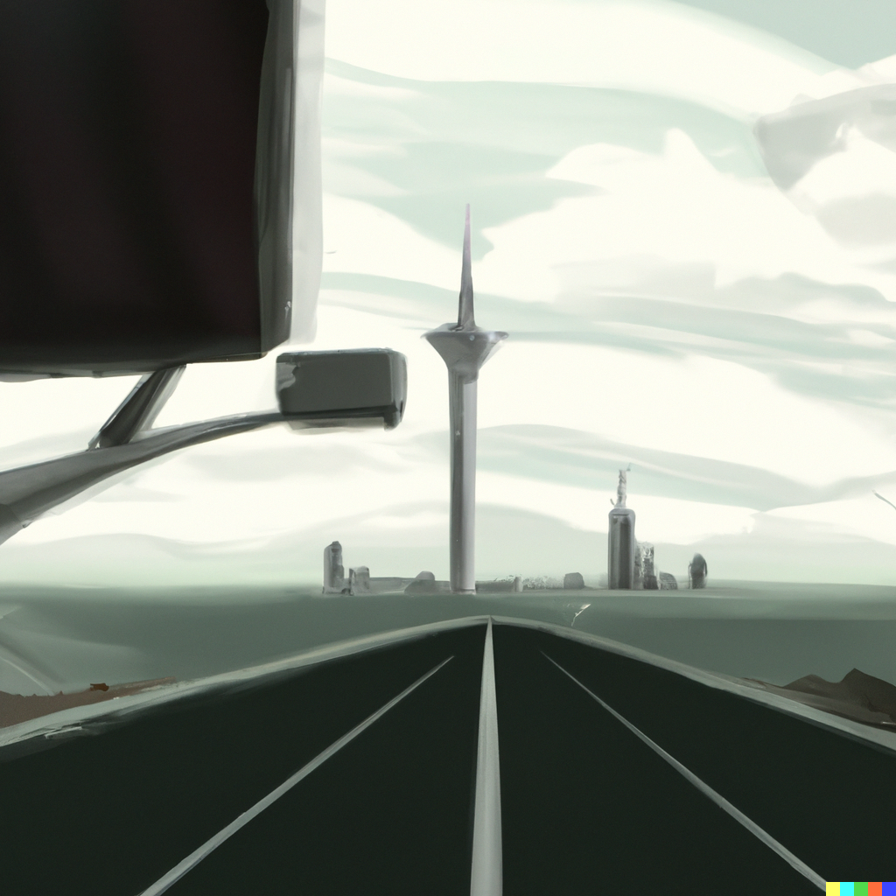

Create an image of a futuristic car traveling on a sleek, elevated highway that curves gently towards a skyline dominated by towering, slender skyscrapers. The sky is a canvas of twilight hues, with soft oranges and pinks near the horizon transitioning into a deep blue. Impressive clouds loom to the left, adding a dramatic effect. The car itself has a classic yet modern design, with clean lines and an aerodynamic shape, hinting at advanced technology while retaining a sense of timeless elegance. The road is smooth and reflective, suggesting a material that is both functional and aesthetically pleasing, possibly with embedded lights or indicators. The scene should capture a blend of serenity and progress, evoking a sense of moving towards a bright, technologically advanced future.